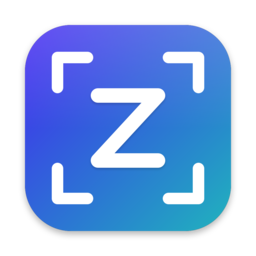
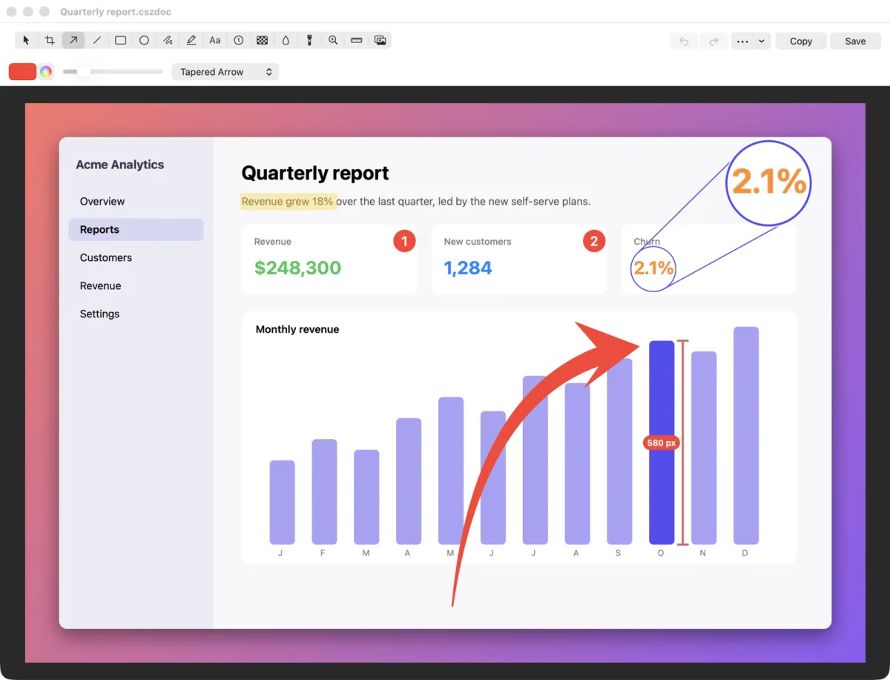
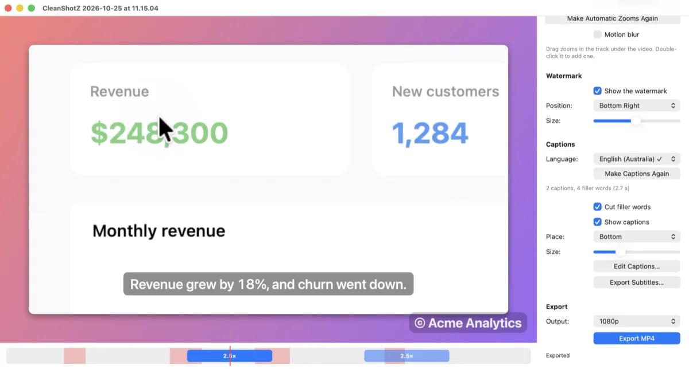
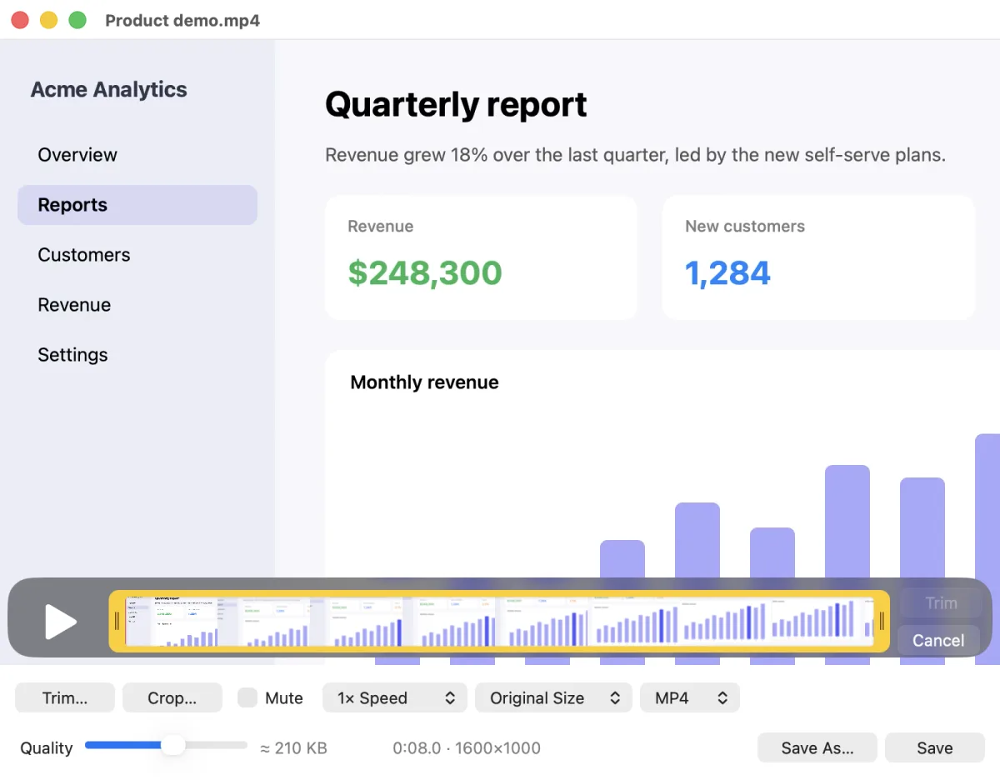
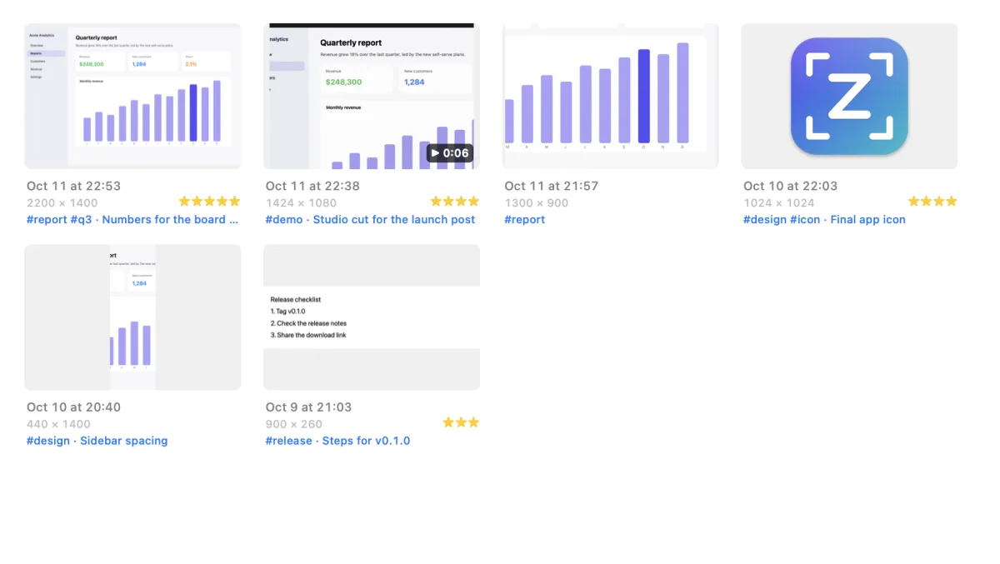
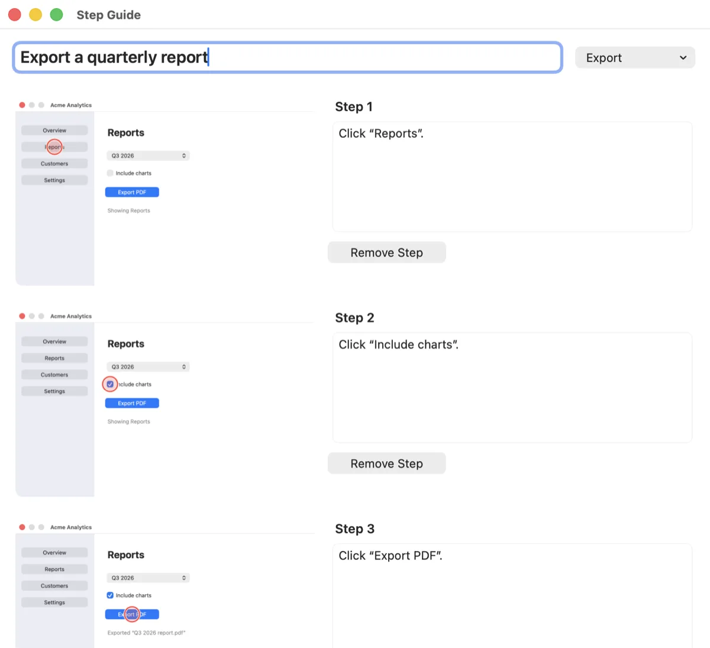
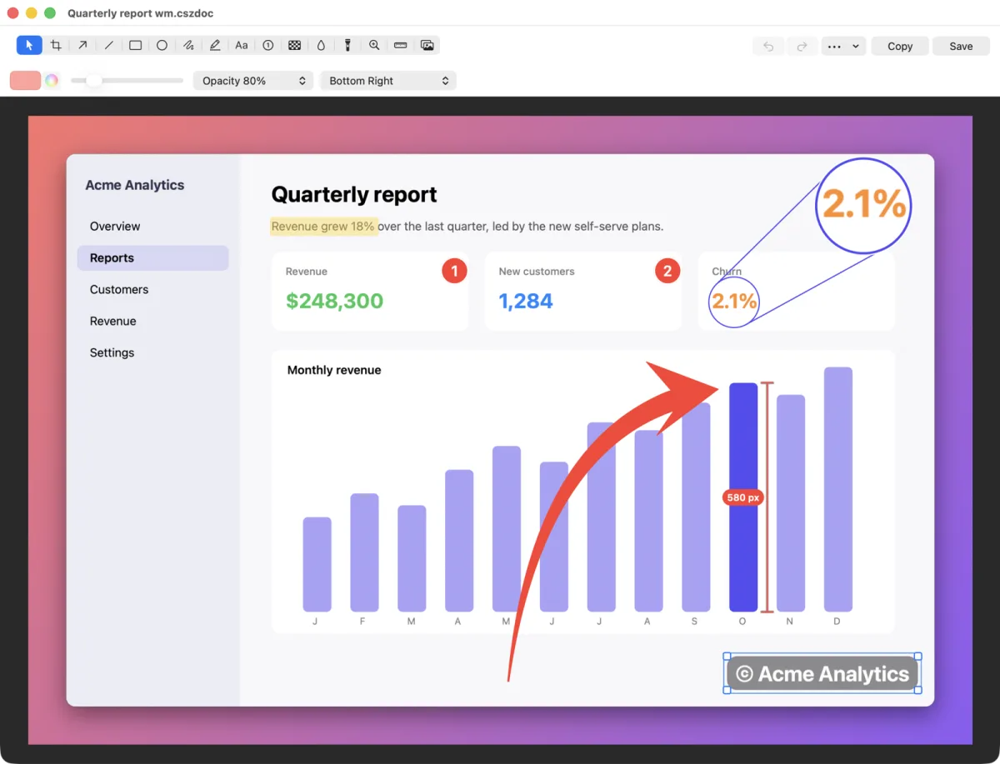

Studio recordings
Record now, polish later: a background, a smoothed cursor, zooms that follow your clicks, and the camera, all changeable after recording.
Screenshots, screen recordings, and annotations for macOS, from the menu bar: capture any part of the screen, mark it up, record it, and share it.
Free and open source. For Macs with Apple silicon, macOS 14 or later. Or install it with Homebrew: brew install --cask houseofmackee/tap/cleanshotz


An area, a window, the full screen, the previous area, or content that scrolls. Copy the text in an area, pick a color, or capture with a timer.
Arrows, shapes, text, numbered steps, highlights, a magnifier, and measurements. Blur or pixelate what's private, and add a background.
Record the screen as MP4 or GIF, with your microphone, system audio, camera, and keystrokes. Studio mode adds zooms, captions, and more.
Record now, polish later: a background, a smoothed cursor, zooms that follow your clicks, and the camera, all changeable after recording.

Make captions on your Mac, in your language, and cut filler words like “um” and “uh” from the recording with one checkbox. Export subtitles as SRT or WebVTT.
Trim, crop, speed up, mute, or shrink a recording, and save it as MP4 or GIF. Trims that need no re-encoding save in a moment.

Every capture and recording, searchable by its text, name, notes, and tags. Rate them with stars and open, copy, or upload any of them again.

Step Capture takes a picture at every click and writes the steps for you, ready to edit and export as Markdown, HTML, or PDF.

Add a watermark of an image or text to screenshots and recordings, with its own position, size, and opacity.

Every capture mode can start from Shortcuts, AppleScript, a cleanshotz:// link, or the cleanshotz command line tool. Pipelines run your own steps after each capture, such as resizing, uploading, and copying the link. Uploads go to your own server, S3-compatible storage, or Imgur, and the Raycast extension puts every command in Raycast.